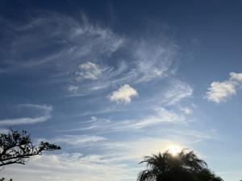
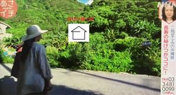
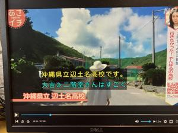

うるがいの話 ある日
最新: 村の外れの豚小屋【うるがいの話 ある日】とは 一日だけのプログです
『うるがいの話』の最新一日だけのプログで、通信料が少なく経済的だ。カニの画像をクリックすると全ての日付が載る『うるがいの話』サイトを表示します
|
|
【うるがいの話】 うるがい(ｳﾙｶﾞｲ urugai)とは、『もずくがに』の名前でとても大きくなります。 |
|---|---|
|
|
【カミマヤーの話】 猫のことを方言でマヤーといいます。カミマヤー（kamimayaa）とは、神の猫のことです。 |
|
【たながぁの音楽】 たながぁ（ﾀﾅｶﾞｰ tanagaa）とは手長えびのことで、何種類かあり大きいのは車 エビぐらいになります。 |

|
【ぶながぁの話】 ぶながぁ(ﾌﾞﾅｶﾞｰ bunagaa)とは、赤い髪の毛、赤い身体、そして身長は１ｍ２０ｃｍ ぐらい、川の蟹を食べているの目撃された。場所は沖縄県国頭郡大宜味村のと ある村僕の隣近所に住んでいる爺さんから、聞いた話です。 |
|
|
【ギーマの話】 ギーマ(giima)とは、山原の里山に咲くスズランに似た、 花を付けます。実は食べられます、 気が付くと口の周りが紫になっています。 |
2024年08月27日 (火）村の外れの豚小屋
15:51

私が小学生の頃、家の豚小屋は辺士名高校に近い村の外れにあった。ＮＨＫ
の『あさイチ 二階堂ふみさんと行く もっと知りたい沖縄』を見ていたら
最初の豚小屋があったところの映像が写されていた。

テレビでは緑の木々でいっぱいだが、私が小学生のころは段々畑でほとんど
木がなかった。こんな感じ（１９５４年伊地の写真）

小学生の私は、リヤカーに父親が用意した豚の餌を大型ポリバケツに積め家
から直線距離３００メールほど（ヤフーの地図で測定）豚小屋へ行って、餌
をあげていた。（今考えると小学生に！と思うが。 豚小屋はその後、２回
変わる）。小学生時代の頭の中の景色とテレビは凄い開きがある。
辺士名高校が写されていた。思い出の辺士名高校（私の学年は７クラス）で
はない！（終わり）。

食堂「笑味の店」を営む著者が書いた本『おばぁたちの台所』を読んだ。昨
年から、田舎へ行っていない。長老たちの近況が、本から分かる。フーンと
皆さん、まだご健在なんだと。食堂の料理は主にベジタリアンだが、私が小
さいころは、漁師の村なので海産物が沢山とれた。そしていろいろな海藻も
ふんだんに食していた。長老たちが長生きなのは、そういうものも食してい
たからだと思う。村では海藻（モズク、モウイ、ナチョラ、アーサ、スーナ
）もシラガウニ、ティラジャー、イイダコなど採れなくなってしまった（多
分）。オバァから、崖にあるニガナをとってきてと言われとり、食べさせら
れた、あんな苦くて不味いもの！と思っていたが、としをとると美味しいの
である（鉢に植えて時々、食べる）。
１５時３６分 ビットコインの総資産 ￥２６、４０１（↓３５２）